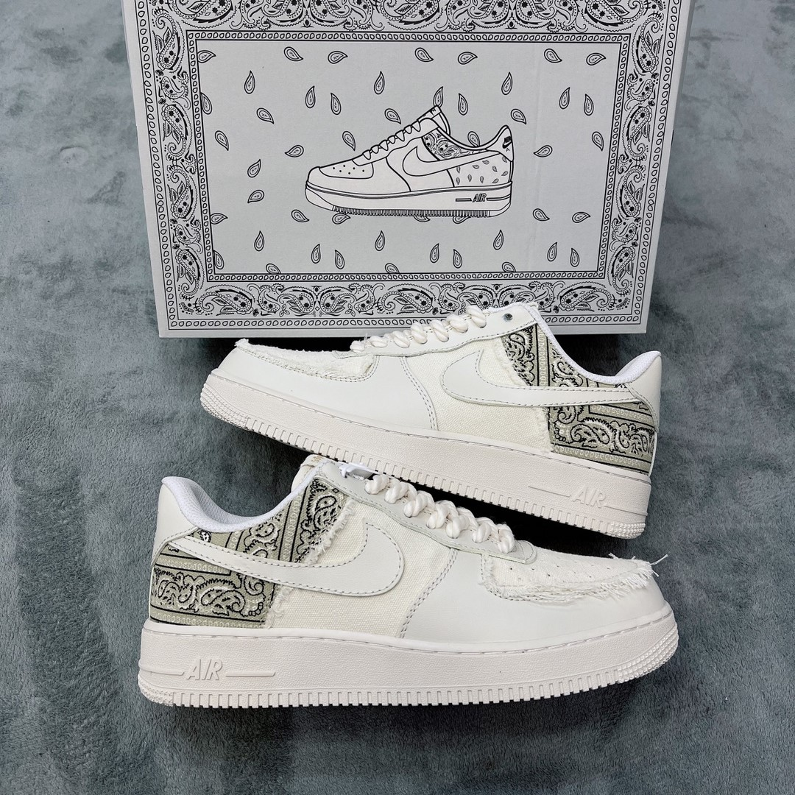

GIỚI THIỆU ADOPT HIPPO SHOP SHOES
Một danh nhân đã từng nói: “Một đôi giầy có thể thay đổi cuộc đời bạn”. Quả thật, một đôi giày tốt sẽ làm bạn thoải mái, một đôi giày đẹp sẽ khiến bạn tự tin hơn rất nhiều.
1 Đôi giày thể thao và 1 đôi giày da bạn sẽ chọn cái nào, Nhiều bạn làm ở văn phong quy định ở công ty bắt buộc phải mang những đôi giày da rất là đau chân, điều này làm cho bạn luôn trong tình trạng khó chịu dẫn đến hiệu quả công việc không được cao.
Đôi với bạn nữ, bạn đấy có thể 1 chọn đôi giày cao gót để lịch sự hơn và phong thái hơn 1 đôi giày thể thao để đi làm.
Có người bảo chọn giày đúng site sẽ không bi đau chân, nhưng nếu chọn đúng đi vẫn đau chân là chuyện bình thường, có những đôi giày chỉ để đẹp nhưng nó rất là đau, bạn có thể chịu đựng để chọn cho mình cái đẹp, nhiều người chọn êm ái trên đôi chân của mình để vững chãi hơn trên con đường mình chọn,
Adopt Hippo Shop Shoes - Shop Giày Giá Rẻ Số UTE
Với những mẫu thời trang đường phố phong các năng động là sự lựa chọn của rất nhiều bạn sau mỗi giờ làm việc mệt mỏi và được đi trên đôi giày êm ái để tập thể dục hay chơi những trò chơi đường phố mang tinh mạo hiểm để bao vệ đôi chân của mình mà chỉ có những đôi giày sneaker này mới có thể làm được.

Phong Cách Thể Thao Đầy Ngẫu Hứng Của Những Đôi Giày Giá Rẻ
Đã từ rất lâu những đôi giày phong các thể thao này vẫn là những đôi giày được mọi người trên thế giới săn đón, đây cũng chính vì sáo các hãng luôn tung ra các mẫu mới để ko bao giờ làm phụ lòng các tín đồ yêu thích các dòng snaker hiện nay

Bạn có thể lựa chọn cho mình 1 đôi giày thể thao phong các trẻ trung năng động và kết hợp với 1 bộ đồ thể thao để ra ngoài phòng gym hay đi chơi với bạn bè mà không bị tụt mốt lại, đó cũng chính là sức hút của những đôi giày thể thao phong các trẻ trung năng động lày mang lại.
Về Kiểu Dáng Giày Sneaker Giá Rẻ
Mục đích cung cấp những dòng thời trong phong phú và bắt treand, Adopt Hippo Shop Shoes luôn cập nhật những thông tiin mới nhất kiểu dáng hiện đại để bạn có thể tìm 1 đôi giày ưng ý cho tủ đồ nhà mình.
- Adopt Hippo Shop Shoes luôn cập nhất những mẫu giày thể thao phong các trẻ trung năng động
- Giá cả phù hợp với mọi người
- Chất lượng sản phẩm được đánh giá cao
- Sử dụng bền bỉ đẹp đẽ theo thời gian.

Mục Đích Và Tính Năng Sử Dụng Giày Sneaker Giày Rẻ Đẹp
Giày thể thao phong các trẻ trung năng động đây được xem là nhiều mẫu mà, những mẫu cơ bản giành cho mọi người tùy vào mục đích khác nhau bạn có thể sử dụng với nhiều mục đích khác nhau.
- Kểu giáng cơ bản dành cho các bạn học sinh theo độ tuổi khách nhau bạn có thể lựa chọn cho mình 1 đôi giày thể thao của V, Converse để đi chơi, hoặc Adidas Stan Smith, Adidas Superstar Để theo quy định nội quy của nhà trường nhé.
- Mẫu giày thể thao bạn có thể lựa chọn những đôi giày phong các trẻ trung và có độ co giãn cao như adidas-ultraboost/, Adidas Yeezy Đều có thể phục vụ tốt công việc của bạn 1 cách thuận lợi nhất.
- Ngoài ra bạn đi chơi có thể lựa chọn 1 đôi Vans, Converse, cũng như mẫu giày Balenciaga sang chảnh và đẳng cấp này đều được nhé.
Để đặt hàng dễ cũng như tạo tiện lợi cho các bạn muốn có 1 đôi giày đẹp bạn có thẻ liên hệ trực tiếp với đội ngũ nhân viên qua số điện thoại: 0123.456.789 hoặc chát trực tiếp qua Fanpage của shop để đặt hàng và xem thêm về sản phẩm

Giá Cả Phù Hợp Và Phải Chăng.
Hiện tại shop đang cung cấp các hàng giày Replica 1:1 đến giày siêu cấp Like Auth giá cả phù hợp, bạn có thể mua 1 đôi giày giày tại shop với giá từ 500k đến 1tr500k Tùy vào mẫu giày, phù hợp cho các bạn học sinh sinh viên cũng như người đi làm với 1 mẫu giày ưng ý nhất.
Đội Ngũ Nhân Viên Và Thương Hiệu Là Uy Tín Hàng Đầu.
Adopt Hippo Shop Shoes không lớn mạnh như các hãng thời trang khác trên thế giới và ở nước ta, nhưng không phải thế mà shop lại không chu đáo với khách hàng, với đội ngũ tư vấn viên nhiệt tình và hỗ trợ bạn trong quá tình tìm site và mẫu giày ưng ý
- Adopt Hippo Shop Shoes cam kết sản phẩm chất lượng, khách hàng có thể nhận hàng và thanh toán sau để có thể cảm nhận được chất lượng của đôi giày mà Adopt Hippo Shop Shoes cung cấp.
- Với nhu cầu để cho đôi chân bạn luôn được êm ái hãy đến với Adopt Hippo Shop Shoes để có trải nhiệm tuyệt vời nhất về giày.
Adopt Hippo Shop Shoes luôn đem đến cho mọi khách hàng những đôi giày chất lượng và bền bỉ đúng với số tiền mà bạn đã bỏ ra.
Hãy đến Adopt Hippo Shop Shoes để cảm nhận sự khác biệt.
Liên hệ

Giới thiệu & Liên Hệ
Số điện thoại: 0123.456.789
Địa Chỉ: Số 1 Võ Văn Ngân, Tp. Thủ Đức, Tp. Hồ Chí Minh.